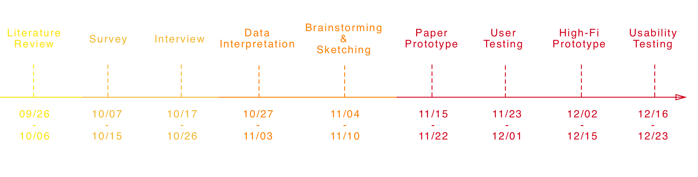

AthleteJuvo: Gamification for Athlete Rehabilitation Exercises and Social Support
Project Introduction
Student-athletes usually experience psychological issues during their injured period, which play important roles in their rehabilitation. The three major challenges are loss of identity, isolation, and inability to understand and communicate their recovery progress between checkups. To assist the injured athletes, we propose AthleteJuvo, a collaborative gaming solution incorporating routine rehabilitation exercises, team competition, and social supports. Specifically, AthleteJuvo utilizes the competitive nature of athletes to gamify the rehabilitation process. Athletes rebuild their identity by forming a team with other injured athletes to compete with their rival schools. AthleteJuvo also helps injured athletes meet nearby injured athletes and connect back with their non-injured team members by sending challenges. To aid in recovery, AthleteJuvo uses wearable sensing fabric which collect and report movement data to the athlete’s therapist.
My Role UX researcherPaper writing
Timeframe Sept. 2017 – Dec. 2017
Team Size 4 people
ToolsPencil & PaperSketchInVisionSurveyCake
SkillsAnalytical researchSketching techniquesWireframing and prototypingUX testing
The Problem
For student athletes, getting injured is not only about physical influence but also psychologically and socially. Since most of an athlete’s daily schedule is team-centered, once they get injured, they miss the social interactions they would have had otherwise. Without their regular training and practice, athletes also miss the element of competition in their lives.
The Process

The interview with the physical therapist from the University of Michigan.

Physical therapists provide paper-based instructions

The folders of paper-based instructions
Literature Review | Survey | Interview
To understand the problems injured athletes encountered in a broader sense, we reviewed studies that are related to injured athletes’ social support, psychological well-being, and stressors during rehabilitation. To get an in-depth understanding of the rehabilitation experience of injured athletes, we conducted an online survey where the access was limited to injured athletes only; and held eight semi-structured interviews, including two expert interviews and six user interviews.
What We Found
- A total of 87 athletes with injury experience completed the online survey during a nine-day period.
- There were 96.5% of the respondents who replied that the injury affected their psychological well-being as well.
- 92% of them reported suffering from depression and isolation during their rehabilitation.
- All interviewees reported that during their injured period, they felt extremely useless, isolated, and experienced a loss of identity.
- The feeling of being isolated stems from the inability to participate in team activities during the rehabilitation.
- The feeling of loss of identity derives from lacking the opportunities to work with their team members and compete against other teams.
Some quotes from the interviewees
“I’m definitely a competitive person. My whole life has been that way, so it’s definitely translating to my personality.”
I also felt as though I stalled out in rehab or that the exercises weren't helping me. Not believing that the rehab was helping made me less motivated to do it which slowed down my recovery
“Being injured is isolating. Your separated from the team with not being able to practice. Nobody truly understands what you’re going through, it’s a lonely process. Fully recovering from an injury is 90% percent mental, 10% physical.”
“Most of my social interaction came through my sport; without being able to go ride a bike with my friends, I was pretty lonely.”
“Being separated from the team atmosphere is really hard, and self doubt can occur. Worrying if you'll be able to reach previous peak performance.”
“Injuries made me feel at time like I wasn't a part of the team. And I was a captain.”
Interview Data Interpretation

Affinity Wall

Interview Data Interpretation
Storyboarding


Paper Prototype


Key Features
- Keep a rehabilitation exercise log using a wearable sensing fabric patch
- Gamify the rehabilitation process
- Build a sense of competition in athletes - Compete in rehabilitation exercise against their rival school
- Instill a sense of cooperation - Form a team with injured athletes from the same school
- Encourage athletes to do their rehabilitation exercise regularly
- Search for and meet nearby injured athletes
User Evaluation
Low-Fi Prototype
We went through two iterations to test our design solutions. First we created sketches and generated a low-fidelity prototype. We then invited five participants to test the low-fidelity prototype. The participants were asked to perform the following tasks, with our team members using a Wizard of Oz technique:
- Attaching the sensing fabric on any of their joints or muscles, and starting the rehabilitation exercise
- Checking their daily rehabilitation progress and team scores
- Checking nearby injured athletes and inviting them to do rehabilitation exercises together
Low-Fi Prototype Feedback
- Users liked the idea of AthleteJuvo because they felt the gaming solution does provide them the satisfaction of competition
- They wish to get a greater sense of competition by having features such as taunting their rival schools
- Besides daily progress, they wish to see their monthly or long-term progress as well
- They wish to know the sports the other injured athletes play
Based on the feedback, we decided to add a calendar and more statistics visualization to show the progress, and add a feature that allows athletes to taunt rival teams and cheer for those in the same school. When other injured athletes are nearby, the application shows the sports they play.
High-Fi Prototype
Injured athletes wear the sensing fabric over injured muscles or joints, and the repetitions will be counted. The patch measures the amount of strain, rotation, and flexion movements commonly found in rehabilitation exercises.
AthleteJuvo then pairs those from the same school and pits their rehabilitation progress against a rival school.
The rehabilitation tasks are assigned by their physical therapists..
If another injured athlete is detected being in the same area, AthleteJuvo notifies and asks the user if s/he wants to do the rehabilitation exercises with the approaching user.
The game score will be reset on a daily basis
Users can keep a rehabilitation exercise log and get visualized data of their rehabilitation progress.
After refining our interface, we then invited five more participants to test the ideas. The main feedback includes:
- Users like the intuitive design, simple but energetic vibe of the interface, mentioning that it makes the rehabilitation exercises more fun.
- Some users were confused about the scoring system.
- Some of them did not know that they could get extra points by sending challenges to their non-injured teammates.
Our users were fond of the idea of making the rehabilitation competitive. The users’ feedback confirmed that it would be better to have a clear guide or tutorials for the features and scoring system.